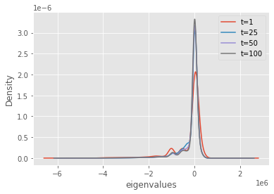
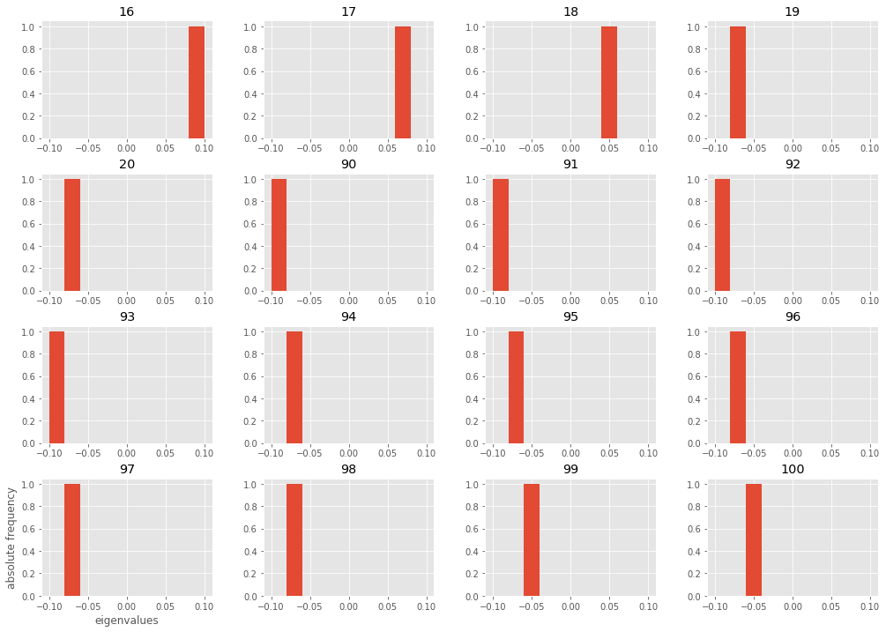
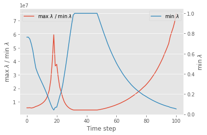
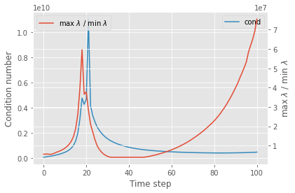
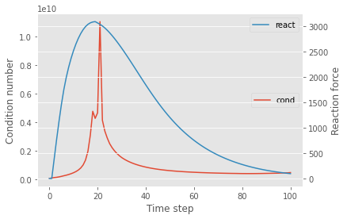

Eigenvalue analysis
Objective?
-
find the eigenvalues of the system matrix during the solution procedure of a specific nonlinear problem.
Expected results?
-
eigenvalue distribution at each time step
-
particularly the small eigenvalues.
-
-
condition number evolution through time steps.
-
ratio between maximum and minimum eigenvalues (absolute value).
-
check its relation with the condition number.
-
-
reaction force over time compared with condition number.
Why?
The condition number is related to convergence properties of Krylov subspace methods.
Preconditioning improves convergence by clustering eigenvalues and hence reduces the condition number.
If we know how the nonlinear behavior affects the eigenvalues we can use this information in the preconditioning process.
Analysis
Description
A rectangular domain size 200x50.
With bottom nodes fixed in the y-direction and the leftmost node fixed in the x-direction.
The load is a specified displacement on the top face of -5 in the y-direction. Resulting in compression of the model.
The material model used is the gradient-enhanced micropolar concrete damage-plasticity (GMCDP). This model extends on the classic concrete damage-plasticity (CPD) model and attempts to provide mesh-independent behavior when non-associative plastic flow rule is used.
The element used is a the GCCPE8R.
Damage evolution

Eigenvalue distribution
With this analysis we want to know if the eigenvalues at each time step are concentrated or spread apart. A clustered eigenvalue range is associated with good convergence (specially).
import matplotlib.pyplot as plt
import matplotlib
matplotlib.style.use('ggplot')
import numpy as np
import pandas as pd
fig, ax = plt.subplots()
time_steps = [1, 25, 50, 100]
df = pd.DataFrame(np.loadtxt("analysis/eigvals_numpy.txt").T)
for t in time_steps:
df[t].plot.kde(ax=ax, label=f't={t}')
ax.legend()
ax.set_xlabel('eigenvalues')
print('Number of eigenvalues, number of time steps: ', df.shape)Number of eigenvalues, number of time steps: (5204, 101)

Remarks:
-
The density with
kde(kernel density estimation) approximates the distribution of the variable.-
the distribution represents the relative frequency of appearance of a particular value.
-
the density is related with the probability of the random variable assuming a value in a specific range, this probability is given by the area under the density curve.
-
we can see the from the distribution that the eigenvalues concentrate around 0, however there are some very extreme values.
-
Eigenvalue histogram
A histogram organizes data in specific ranges.
The goal is to set a small range [-lim, lim], where we want to see if there is an eigenvalue of on this range.
On this range, the histogram function subdivides it automatically in 10 bins.
If during a time step there are an eigenvalues in the range [-lim, lim] then plot how many in each bin.
However, If there is none, then drop the column referring to this time step with dropna().
df = pd.DataFrame(np.loadtxt("analysis/eigvals_numpy.txt").T)
lim = 0.1
print("Range limited by: ", lim)
ax = df[df.abs() <= lim].dropna(axis=1, how="all").hist(
range=(-lim, lim), figsize=(17, 12))
ax[-1][0].set_ylabel('absolute frequency')
ax[-1][0].set_xlabel('eigenvalues')Range limited by: 0.1

Remarks:
-
At those time steps, there is one eigenvalue in the range
[-lim, lim]. -
During the beginning of formation of shear band, close to step 16 we can notice:
-
the system getting close of being singular (no inverse, no single solution, determinant equal to zero, eigenvalue close to zero).
-
-
Also long after the shear bands formed, steps 90-100, the minimum eigenvalue got very small as well.
Eigenvalues ratio
fig, ax = plt.subplots()
eigvals = pd.DataFrame(np.loadtxt("analysis/eigvals_numpy.txt").T)
eigen_ratio = eigvals.abs().max() / eigvals.abs().min()
eigen_ratio.plot(ax=ax, label=r'max $\lambda$ / min $\lambda$')
eigvals.abs().min().plot(ax=ax, secondary_y=True,
label=r'min $\lambda$')
ax.set_xlabel('Time step')
ax.set_ylabel(r'max $\lambda$ / min $\lambda$')
ax.right_ax.legend()
ax.right_ax.set_ylabel(r'min $\lambda$')
ax.legend()
Remarks:
-
At time step 20 the eigenvalues get very small (absolute value).
-
After the formation of the shear bands, at around step 20, the minimum eigenvalue returns to around 1,
-
however, after a while, around step 55, the minimum eigenvalue start to decrease again.
-
this phenomena is not captured by the condition number (see next section).
-
Condition number and eigenvalue ratio
fig, ax = plt.subplots()
eigen_ratio.plot(ax=ax, label=r'max $\lambda$ / min $\lambda$', secondary_y=True)
df = pd.DataFrame(np.loadtxt("analysis/cond_AAinv.txt").T)
df[0].plot(ax=ax, label='cond')
ax.set_xlabel('Time step')
ax.set_ylabel('Condition number')
ax.right_ax.set_ylabel(r'max $\lambda$ / min $\lambda$')
ax.right_ax.legend()
ax.legend(loc='upper right')
Remarks:
-
The system is not symmetric, hence the condition number is not the same as the eigenvalues ratio.
-
For general square matrices, the singular value is the square route of the eigenvalues of the Gram matrix ($A^T A$), so there still some relation between them.
-
-
However, this ratio somewhat captures the phenomena.
-
At around step 55, the minimum eigenvalue starts to get smaller again, making the eigenvalue ration larger and larger.
-
this is not captured by the condition number.
-
Condition number and reaction force
Computed with the definition $\kappa = \lVert A \rvert \lVert A^{-1} \rVert$.
fig, ax = plt.subplots()
df = pd.DataFrame(np.loadtxt("analysis/cond_AAinv.txt").T)
df[0].plot(ax=ax, label='cond')
df['react'] = pd.DataFrame(np.loadtxt("analysis/RF.csv")[:, 1])
df['react'].plot(ax=ax, label='react', secondary_y=True)
ax.set_xlabel('Time step')
ax.set_ylabel('Condition number')
ax.right_ax.set_ylabel('Reaction force')
ax.right_ax.legend()
ax.legend(loc='center right') Remarks:
-
The system becomes close to be singular around the time where the shear band is formed.
-
The function used to compute the norm uses the Frobenius norm,
scipy.sparse.linalg.norm, and it does not have a 2-norm implemented.-
from my experiences the difference between the two are small.
-
References
-
Elman, H. C., Silvester, D. J., & Wathen, A. J. (). Finite elements and fast iterative solvers: with applications in incompressible fluid dynamics. : Oxford University Press.